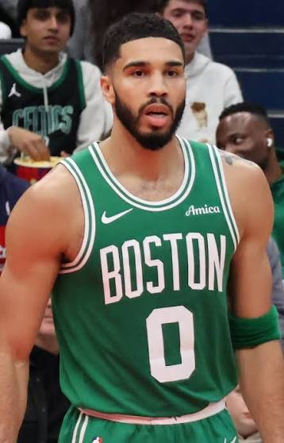
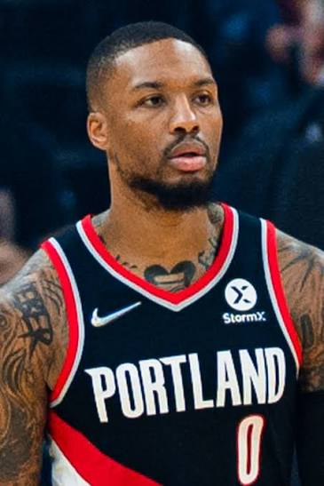

HoopThink · The Intelligence Layer of BasketballEdition No. 002
The24
Everything that happened in basketball in the last 24 hours, read the way a scout reads it.
Wednesday, October 28, 2026Covering Tuesday, Oct. 274 NBA games · NCAAM + NCAAW exhibitions
Final / OT
BKN124
BOS125
Tatum 40 · winner at horn
Final
DET97
NYK111
Towns 27-20
Final
SAC103
SA130
Wemby 29-10 · 5 blk
Final
POR136
LAL129
Luka 41 · Morant, Avdija 23
NCAAM · Exhibition
PURDUE53
UCONN76
PUR 2-of-25 from three
NCAAM · Exh / OT
CHARLOTTE82
UNC89
T. Brown 27
NCAAW · Exhibition
FAMU63
TENN132
77 at the half
The Game · Boston
Tatum Gets 40, Then Gets the Last Word.
Boston gave an 0-3 team every chance to steal one at the Garden. Jayson Tatum took it back with a 17-footer from the left elbow as overtime expired.
By The Westview Group · Contributor: Keil Moore

Jayson Tatum, Celtics. File photo.
40 PTS10-20 FG2-7 3PT18-22 FT8 AST5 REB42 MIN
Celtics 125, Nets 124. Second night of a back-to-back, and Boston didn't look like the team that beat Chicago by 35 the night before. The Celtics went 2-of-16 from three in the first half and trailed 61-56 at the break. Neither team led by more than eight all night.
Regulation should have been over. Up three with four seconds left, Tatum made one of two at the line. Julius Randle made his first and missed the second on purpose. Mitchell Robinson grabbed the board, got fouled and missed both. Brooklyn called time, and No. 6 pick Mikel Brown Jr. buried a left-corner three with 0.2 seconds on the clock. Tie game.
Brooklyn led 124-119 with two minutes left in overtime and didn't score again. Randle fouled out chasing a loose ball with 1:02 to go. Paul George hit free throws to make it 124-123. Brown missed a three, then missed a layup at the rim with 2.3 seconds left. One timeout later, Tatum caught it at the left elbow, rose and won it.
The scouting read on Tatum: he lived at the line, 18-of-22. When the three isn't falling (2-of-7), he attacks the closeout, goes downhill into the body and gets to the stripe. That's how you score 40 on 20 shots. He also found Derrick White for the and-one dunk that put Boston up 114-111 with 33.7 seconds left in regulation.
Scout's Note · The math on a one-point game
Brooklyn made 17 threes to Boston's 11. That's +18 from deep. Boston made 30 free throws to Brooklyn's 17. That's +13 at the line. The Nets also took 50 threes, and 33 of them missed. Michael Porter Jr. (27 and 12, 6-of-12 from deep) and Randle (24 and 9) gave Boston real problems. But a team that takes 50 threes and takes 22 free throws is living on variance. Boston turned paint touches into free throws, and that's the more reliable way to win a close game.
The defending champions were 0-3, and they fell behind by 12 in the second quarter. Then they flipped the game. New York won the second quarter 26-12 and led 88-63 after three, the largest lead reaching 27. Detroit's 12-point second and 13-point third were its lowest quarters of the season, per SNY.
Karl-Anthony Towns went for 27 and 20, his third straight double-double, with 7 turnovers. Jalen Brunson added 23 and 7 assists. Mikal Bridges hit 4-of-8 from three after going 0-for-10 from deep in the first three games. Cade Cunningham scored 19 on 7-of-18. It was New York's first win over Detroit in 544 days, per the Daily News.
Julian Champagnie came off the bench and scored 24 in the first half, all on threes: 8 of them, 6 in the second quarter alone. He finished with 26 in 25 minutes. Victor Wembanyama had 15 in the first quarter and finished with 29 points, 10 rebounds and 5 blocks on 14-of-21 in 27 minutes.
Sacramento is 0-4 and has given up at least 121 in every game. Domantas Sabonis put up 20, 14 and 8. De'Andre Hunter scored 24 and Zach LaVine 22. The Spurs head to Utah on Wednesday, the road half of a back-to-back.
Edwards was listed questionable with right knee management in Cleveland and played 41 minutes anyway. A day later came the news that he'll have an arthroscopic procedure on the right knee, with a window of up to two months. FOX 9 confirmed it with a team source.
He missed 21 regular-season games last year with right knee problems. Minnesota is 3-1, and LaMelo Ball, Ayo Dosunmu, Terrence Shannon Jr. and Bones Hyland now have to carry the creation load. Donte DiVincenzo is still out recovering from a torn Achilles. Golden State visits Wednesday.
Damian Lillard: 21 points, 4 threes, and the stepback that sealed 136-129. File photo.

Portland is 3-0. File photo.
🌹 Blazers 136, Lakers 129. Portland is 3-0, and LA's unbeaten start is over. Luka scored 41 with 9 assists (12-of-22, 6-of-15 from three), and Austin Reaves added 26. Portland had six players in double figures: Ja Morant 23 on 9-of-13, Deni Avdija 23 and 9 assists, Jrue Holiday 22, Damian Lillard 21. Lillard hit a stepback three over Matisse Thybulle's closeout for a 135-129 lead, his fourth three of the night. The Blazers went 18-of-36 from three. SI recap
🎯 Mikel Brown Jr., 17 points and 5 assists. Rough night from the floor (5-of-17), but he hit the corner three to force OT and a second three to put Brooklyn up five in the extra period. Recap
🧱 Michael Porter Jr., 27 and 12 on 6-of-12 from three, with 2 blocks. Moritz Wagner gave the Nets 15 off the bench on 6-of-9.
🏀 Paul George, 20-7-7 for Boston, plus the two free throws that cut it to one in OT. Jordan Walsh: 15 on 5-of-8.
🛡️ Andre Drummond, 10 and 8 in 14 minutes on 5-of-7 for Detroit, off the bench, with Duren out.
Film Room
The box-score lines nobody's talking about
50
Three-point attempts by Brooklyn in Boston. They made 17 (34%). Brooklyn lost by one because Boston got to the line 38 times.
1/4
Mitchell Robinson at the line, including the two misses with three seconds left that opened the door for Brown's tying three. He's 2-of-8 on the season.
20
Rebounds for Towns at MSG. The catch: 7 turnovers, after 19 in his first four games. The glass is elite and the ball security isn't there yet.
58%
Detroit at the free-throw line in New York. Both teams shot 43% from the field. The 14-point gap was made at the line and in Detroit's dead second and third quarters.
2/25
Purdue from three at UConn (8.0%). The Boilers had made 30 of 73 in their first two exhibitions.
5
Blocks for Wembanyama in 27 minutes. The 29 and 10 got the headlines. The rim protection is why Sacramento was done by halftime.
The Pipeline
NCAAM · NCAAW · Recruiting · Rookies
NCAAM · Hartford, Conn.
No. 4 UConn 76, Purdue 53 (exh.)
Braylon Mullins made his exhibition debut, and Purdue's shot went cold: 32.8% from the field and 2-of-25 from three. C.J. Cox led the Boilers with 18 and 7 on 7-of-14. Daniel Jacobsen, Purdue's 7-foot-4 post, had 4 blocks and finished the preseason with 10. UConn won the glass 40-34 and scored 41 in the second half. The Huskies open against No. 15 Gonzaga in Las Vegas on Monday.
Michael Malone's final tune-up got messy. North Carolina trailed 74-69 with 2:42 left in regulation, forced overtime and pulled away. Terrence Brown led with 27, including 12 after halftime. The Daily Tar Heel called the rest of the offense disjointed. The Heels went 2-1 in exhibitions and open against Western Carolina on Monday.
Owen Foxwell led the Badgers with 19 on 5-of-10 before leaving late after a hard collision. The bench scored 39, and 10 of the 12 Badgers who played scored.
Kim Caldwell's press did what it was built to do. Tennessee scored 77 in the first half and led 77-27 at the break, with turnovers turning into points the other way. Naomi White couldn't miss early. It was the Lady Vols' only exhibition, and they open Nov. 2.
Class of 2027 point guard Jamaal McKnight Jr. (Iowa United Prep, Des Moines) committed to Utah after an official visit, per the Deseret News. He chose the Utes over a final group of Kansas, UNLV and Boise State. He's 5-foot-10 and has played at Long Island Lutheran and DeMatha, two of the best programs in the country. That's a lot of high-level reps for a guard his age.
Don't grade the two late misses in a vacuum. He got to the rim against a set Boston defense in the final seconds of OT. The finishing comes with strength and reps. The shot-making is already there: 4 threes, including the one to force overtime. What a rookie needs to work on is shot selection. Seventeen shots and 11 threes is a lot for a rookie lead guard on the road.
The Business
Front offices · NIL · the money side of the game
NCAAM · Alabama State
Dominique Wilkins Takes the GM Job at Alabama State
Alabama State named the Hall of Famer general manager of its men's basketball program Tuesday night, announcing it at the school's Basketball Tipoff Reception in Montgomery. The job description covers fundraising, donor engagement, NIL partnerships, revenue sharing, roster planning and student-athlete development, working alongside the athletic administration and the coaching staff.
One day after Auburn's GM was fired, a SWAC program went the other way and hired a name that opens doors. For an HBCU competing for NIL dollars against power-conference collectives, the Human Highlight Film's Rolodex might be the most valuable recruiting asset on campus.
Look at what's in that job description: fundraising, donors, NIL, revenue sharing. That's a development officer and a capologist in one title. At most HBCUs the money gap with the power conferences is the whole story, and a GM who can get donors on the phone is a real competitive edge, not a ceremonial hire.
But the Auburn situation is the warning. A GM role without clear compliance lines and written eligibility standards is a liability waiting to happen. Give Wilkins the network job and put a compliance professional next to him. Celebrity opens the door. Governance keeps it open.
The moments, the noise, the stuff you'll see on your timeline
Boston · 0.2 seconds
Two Buzzer Shots, One Night
A rookie's corner three with 0.2 on the clock, then Tatum's elbow jumper at the overtime horn. Both are going to be on your timeline all day. The Nets also won a coach's challenge in the last 30 seconds of OT, which gave them the ball back and the chance to win it.
The defending champs started 0-3. In the third quarter Tuesday, Josh Hart hit a buzzer-beater and Tyler Kolek's steal turned into a Towns dunk. The Garden finally got to exhale.
FOX 9 reports that if Edwards misses up to two months, he wouldn't be eligible for postseason awards, and without them he's unlikely to qualify for a supermax extension. The games-played rule was written to stop healthy stars from sitting. It wasn't written to take money from a player who scored 47 on the knee before he got it fixed. Next CBA: separate verified, documented injuries from rest days, and stop tying nine-figure contract eligibility to an attendance sheet.
Edwards played through a bad knee and scored 47. Now a procedure could cost him awards eligibility and a shot at the supermax. Should the next CBA carve out documented injuries from the games-played rule?
Answer in the comments or quote the post with #The24
Sources
Box scores via StatMuse and CBS Sports; everything else linked below